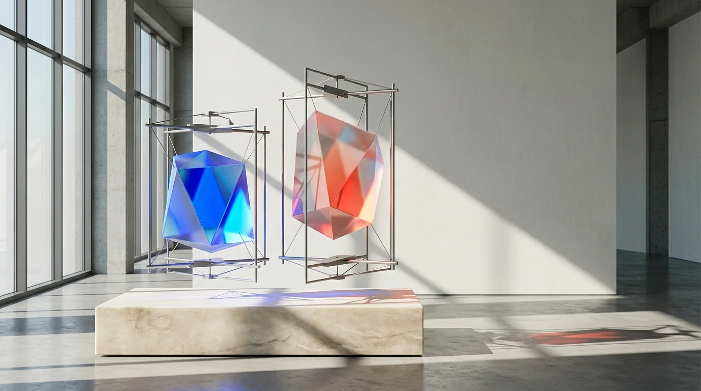

/read
· α Castor · The Magazine
Understand Gemini Releases, AI Markets & Where It’s Going.
Every Google Gemini update decoded on release day, plus broader AI finance shifts and industry voices—zero code walls.

Today in /read · Release + Market
Google’s Screen-Operating AI Arrives—What Changes for Teams & Software Margins
⇄ Linked directly to a 3-step /build working example- Every Gemini Release Decoded: What launched today and what it actually means.
- AI Finance & Market Landscape: Pricing shifts, business economics, and macro trends.
- Ecosystem Commentary: Curated talks, videos, and what credible voices are saying.
Switch to /build anytime from the top bar